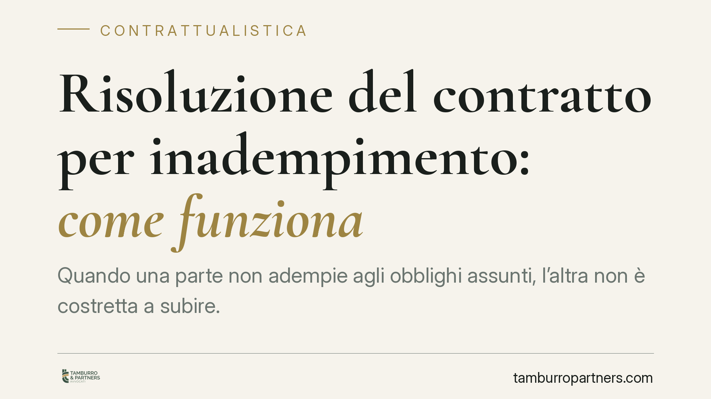

Risoluzione del contratto per inadempimento: come funziona
Quando una parte non adempie agli obblighi assunti, l'altra non è costretta a subire. Il Codice civile prevede la risoluzione del contratto, che libera il creditore dagli impegni e apre la strada al risarcimento. Ma non ogni mancanza basta: serve un inadempimento di non scarsa importanza. Ecco requisiti, effetti e mosse concrete.

Il fatto in sintesi
Un contratto è un accordo vincolante: chi lo firma si obbliga a rispettarlo. Quando ciò non accade, la parte fedele può reagire chiedendo la risoluzione, cioè lo scioglimento del vincolo con effetto liberatorio.
Immaginiamo che Mario venda a Giovanni una fornitura di merce a una certa data. Se Giovanni non paga, o Mario non consegna, il rapporto entra in crisi. La legge offre uno strumento preciso per uscirne.
Inquadramento normativo
Il riferimento cardine è l'art. 1453 del Codice civile: nei contratti a prestazioni corrispettive, se una parte non adempie, l'altra può chiedere a scelta l'adempimento oppure la risoluzione, salvo in ogni caso il risarcimento del danno. È possibile domandare l'adempimento e, in un secondo momento, passare alla risoluzione; non il contrario.
Non ogni inadempimento, però, giustifica lo scioglimento. L'art. 1455 c.c. stabilisce che il contratto non si risolve se l'inadempimento ha scarsa importanza rispetto all'interesse dell'altra parte. La valutazione è concreta: conta il peso effettivo della prestazione mancata sull'economia dell'accordo. La Corte di Cassazione ha ribadito che il giudice deve verificare la gravità in relazione all'interesse del creditore (tra le altre, Cass. 32126/2019 e Cass. 767/2016).
Quanto agli effetti, l'art. 1458 c.c. dispone che la risoluzione ha efficacia retroattiva tra le parti: ciò che è stato ricevuto va restituito. Nei contratti a esecuzione continuata o periodica, invece, la risoluzione non tocca le prestazioni già eseguite. I diritti dei terzi restano salvi.
Da distinguere è l'art. 1459 c.c., che riguarda i contratti plurilaterali: l'inadempimento di una parte non travolge l'intero contratto, salvo che la sua prestazione fosse essenziale.
Le tre strade per la risoluzione
La risoluzione non passa sempre dal giudice. Esistono meccanismi che operano in modo più rapido.
Risoluzione giudiziale. È la via ordinaria dell'art. 1453: si chiede al giudice di dichiarare sciolto il contratto. La sentenza accerta l'inadempimento e ne dichiara gli effetti.
Diffida ad adempiere. Il creditore intima per iscritto alla controparte di adempiere entro un termine congruo (di regola non inferiore a quindici giorni), avvertendo che, decorso inutilmente, il contratto si intenderà risolto. È uno strumento di autotutela previsto dall'art. 1454 c.c.
Clausola risolutiva espressa. Le parti possono pattuire che il contratto si risolva se una determinata obbligazione non viene eseguita nei modi stabiliti (art. 1456 c.c.). In questo caso la risoluzione opera al momento in cui la parte interessata dichiara di volersene avvalere. La Cassazione ha chiarito che la clausola deve individuare in modo specifico gli obblighi la cui violazione produce lo scioglimento (Cass. 26907/2014; sul tema anche Cass. 15363/2010).
Implicazioni pratiche
Per chi subisce l'inadempimento la posta in gioco è duplice: recuperare quanto prestato e ottenere il ristoro del danno. La scelta tra adempimento e risoluzione va calibrata sull'interesse reale. Se la prestazione conserva utilità, insistere per l'adempimento può essere preferibile; se il ritardo ha compromesso l'affare, la risoluzione tutela meglio.
Attenzione al requisito della gravità: chiedere la risoluzione per un inadempimento marginale espone al rischio di soccombenza e di dover risarcire le spese. La documentazione del pregiudizio subito diventa quindi decisiva.
Chi è accusato di inadempimento, dal canto suo, può difendersi dimostrando che la mancanza è di scarsa importanza, oppure che dipende da causa non imputabile, o ancora eccependo l'inadempimento della controparte (art. 1460 c.c.).
Cosa fare in concreto
- Rileggi il contratto e verifica se contiene una clausola risolutiva espressa: cambia radicalmente la strategia.
- Conserva ogni prova dell'inadempimento: comunicazioni, solleciti, mancati pagamenti, verbali di consegna.
- Invia una diffida ad adempiere scritta, con termine congruo e formula esplicita di risoluzione, prima di agire in giudizio.
- Valuta la gravità dell'inadempimento rispetto al tuo interesse: non ogni ritardo giustifica lo scioglimento.
- Quantifica il danno in modo documentato, per fondare la richiesta di risarcimento.
La scelta dello strumento — diffida, clausola o azione giudiziale — incide su tempi, costi ed esito. Consigliamo una valutazione preventiva del caso specifico prima di formalizzare qualsiasi contestazione.
---
*Contributo informativo a cura di Tamburro & Partners - Avv. Giuseppe Tamburro. Non costituisce parere legale.*
Ogni contratto ha il suo equilibrio.
Se vuoi una revisione delle clausole o una redazione su misura, scrivi allo studio. Ti rispondiamo entro un giorno lavorativo.